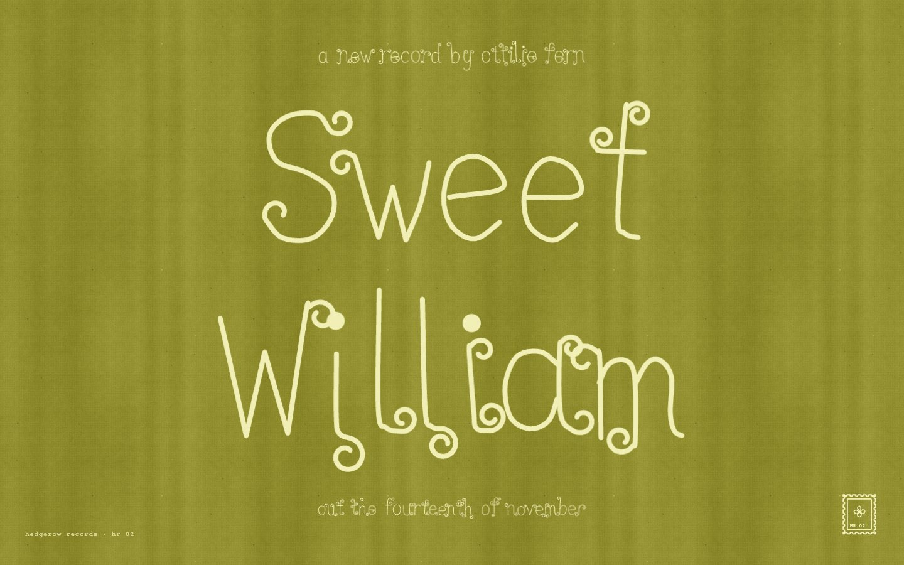

maximalist-pop
Maximalist pop
the hand-lettered record · hand.js, 38 kB

open the live page ↗An indie record lettered by one hand, four ways. The cover curls every loose end, the prints carry ink balls on the stroke ends, the tour poster is fat white bubble writing with stamps stuck around it, and the single is one line that never lifts from the paper, looping over a grainy photograph. It is maximal in the hand, not in the palette: one paper, one ink.
- Paper and ink
- Type
- one alphabet drawn point by point, finished as curl, ink ball, chunky or one line; Courier Prime and EB Garamond only for typed facts
- Made of
- seeded bounce, lean and wobble per letter
- the pen drawing each stroke on
- stamps, stars and a grainy b/w photo, all in code
- Refuses
- handwriting fonts standing in for lettering
- more than one ink per surface
- real artists’ names or covers
pixelsort-glitch
Pixel-sort glitch
the broken file · glitch.js + pixelsort.js, 44 kB
Five plates, each made by doing to a picture what a file or a machine does. A codec loses its motion vectors and the columns drip. A one-bit line overruns. A sheet moves in the scanner. A JPEG opens as MacRoman. Tiles fail to load. Every mark comes from the picture underneath, so it reads as broken, not decorated.
- Flat colour
- Type
- IBM Plex Mono for everything small, Archivo 800 in caps for anything large
- Made of
- macroblocks, then columns stretched down and interval-sorted
- real JPEG bytes decoded as MacRoman
- your own photo, text file or any file, dropped in
- Refuses
- RGB-split
text-shadowon headings - glitch that ignores the picture under it
- soft pixels, neon on black
- RGB-split
riso-cartography
Risograph cartography
the duplicator · riso.js + cartography.js + atlas.js, 47 kB
 open the live page ↗
open the live page ↗
A risograph pushes one translucent ink at a time through a stencil onto uncoated paper. So you never pick a fill colour: you pick a drum, and white is where it has no ink. The engine simulates the press. Four seeded map sheets go through it: an aerial estuary with its creeks knocked out, stepped photo windows ruled in red, a yellow-and-grey island chart with rock insets, and one green drum of type spread soft over clouds.
- Inks
- Type
- Instrument Serif italic for titles, Instrument Sans in small caps for printed blocks, Plex Mono for typed notes
- Made of
- per-drum masters, grain screens, multiply overprint
- misregistration, drum mottle, starved specks
- creeks that fork and thin, rock drawn from its own height field
- Refuses
- a noise PNG on a flat design
- white fills where paper should show
- a fourth ink, perfect registration
indigo-grain
Indigo grain
the blue board · cyanotype.js + botanica.js, 83 kB
 open the live page ↗
open the live page ↗
A blue mood board, made in the page. Light forms rise out of navy-black, butterflies blur as they move, lilies lie on the paper as photograms, and photographs are sun-printed until the highlights burn out and the brushed edge shows. There is marbled paper, ink spray, a halftone under a loupe, and two posters with small type. Every speck is a colour from one ramp, so the hue never drifts.
- Tones
- Type
- Fraunces italic for sheet names, Space Mono for the controls, Archivo in small caps on the posters only
- Made of
- grain as a shift along the colour ramp, never RGB noise
- masks blurred at several depths and smeared where things moved
- marbling solved backward stroke by stroke, sun prints with brushed edges
- Refuses
- a smooth mesh gradient with noise on top
- clip-art butterflies, radially symmetric flowers
- a blue tint passed off as a sun print
ethereal-haze
Ethereal haze
the soft-focus photograph · haze.js, 28 kB
 open the live page ↗
open the live page ↗
Photographs the lens could not keep: petals held too close to focus, poppies moving past a slow shutter, a branch left on green sun-print paper, a figure smeared in sepia. The blur is optical, a disc for defocus and a line for motion, with the near things sharper than the far. One small serif word sits in the middle.
- Four looks
- Type
- one thin serif wordmark (Marcellus), small and centred; Jost for the tiny line under it and the captions
- Made of
- disc defocus and line motion blur, at two depths
- tissue petals that deepen where they overlap
- midtone film grain at full resolution; your photo, developed
- Refuses
- mesh gradients and blurred blobs posing as photographs
- outlined or star-shaped flowers
- more than one word on a plate
Put them in a session
# in Claude Code: add this repository as a plugin marketplace, then install /plugin marketplace add florispenninckx/hand-pulled /plugin install hand-pulled@hand-pulled # or take one style only git clone https://github.com/florispenninckx/hand-pulled cp -r hand-pulled/skills/riso-cartography ~/.claude/skills/
- Ask for the page in plain words: “the site for my ceramics studio, printed like a two-colour riso poster”. Claude picks the skill by its description.
- The skill tells Claude to read its reference page first, copy the engine into your project, and build with the process.
- Each brief ends in a checklist that Claude runs against a real screenshot before it calls the work done.